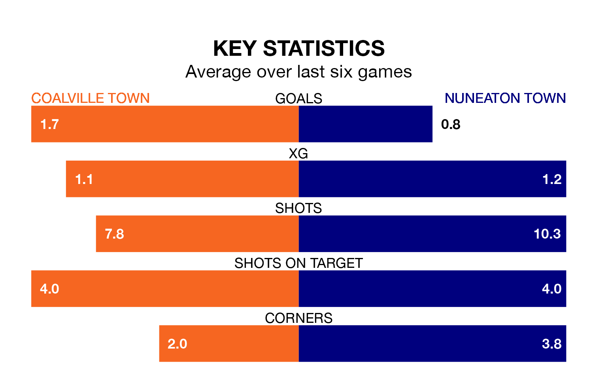

Coalville Town are heavy favourites to keep all three points at home in Tuesday's late kick-off against Nuneaton Town.
Coalville, who sit 11th in Southern League Premier Central with 23 games played, are priced at 1.6 to seal victory at Owen Street Sports Ground.
Sitting two places behind them in the table, Nuneaton are 4.2 to win with *Betting Company*, while the draw is at 3.9.
With 53 goals in 23 games so far this season, Coalville are the league's joint-highest scorers with 2.3 goals per game. But they are conceding more than average too, letting in 39 goals at a rate of 1.7 per game.
Nuneaton, meanwhile, are below average scorers, with 1.4 goals per game, compared to a league average of 1.5. They have conceded 1.6 goals per game.
Coalville Town are in mixed form in Southern League Premier Central, with two wins and three draws from their last six games.
With no wins and three draws over that period, Nuneaton Town's form is much worse – they have taken three points from 18, compared to the home team's nine.
In the last 10 years, Coalville and Nuneaton have played each other on seven occasions. Coalville won four of them, Nuneaton two, and they drew once.
On average, Coalville scored 2.0 goals and the Boro 1.7 in those matches.
Their last meeting was on September 9, when Nuneaton won 4-1 at home.
Coalville's last match was on January 6, a 4-2 win against Redditch United.
Nuneaton lost 3-0 against St Ives Town last time out, on Saturday.
Updated: 14:53 (UTC), 16/01/24